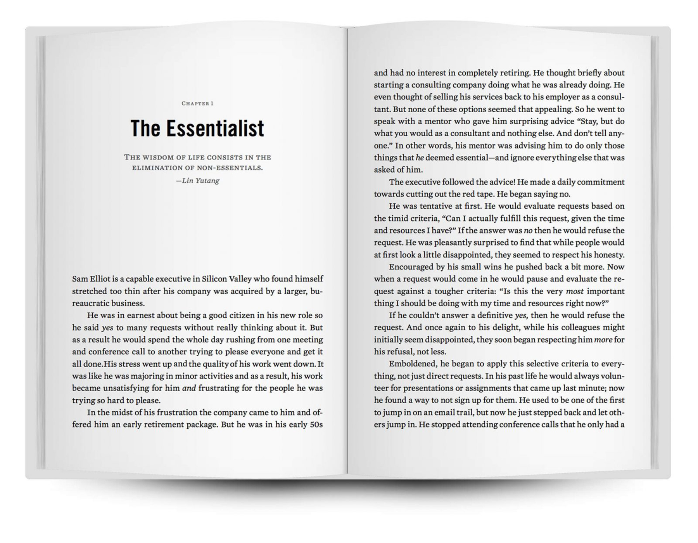

Sam Elliot is a capable executive in Silicon Valley who found himself stretched too thin after his company was acquired by a larger, bureaucratic business.
He was in earnest about being a good citizen in his new role so he said yes to many requests without really thinking about it. But as a result he would spend the whole day rushing from one meething and conference call to another trying to please everyone and get it all done.
His stress went up and the quality of his work went down. It became unsatisfying for him and frustrating for the people he was trying so hard to please.
In the midst of his frustration the company came to him and offered him an early retirement package. But he was in his early 50s and had no interest in completely retiring. He thought briefly about starting a consulting company doing what he was already doing. He even thought of selling his services back to his employer as a consultant. But none of these options seemed that appealing. So he went to speak with a mentor who gave him surprising advice "Stay, but do what you would as a consultant and nothing else. And don't tell anyone." In other words, his mentor was advising him to do only those things that he deemed essential-and ignore everything else that was asked of him.
